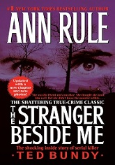
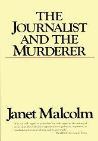
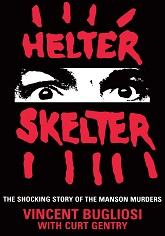

At the top of any best of true crime list must be
the book that
revolutionized the genre. Capote’s 1966 “nonfiction
novel” about
the brutal murder of a Kansas family in 1959 is a
page-turner
that honors the victims even while displaying
empathy for the
perpetrators.

THE STRANGER BESIDE ME by Ann Rule
The queen of true crime wrote dozens of books, but
Ann Rule’s
masterpiece is her particularly harrowing debut. In
The Stranger
Beside Me, Rule describes her personal relationship
with a
co-worker whom she later realizes is a serial
killer: the handsome
and charming—and prolific—murderer Ted Bundy.

THE JOURNALIST AND THE MURDERER by Janet Malcolm
Skip Fatal Vision, the true crime book written by a
journalist who
was embedded with a man who was ultimately convicted
for killing
his pregnant wife and their two other children.
Instead, get more
meta and read ace cultural critic Janet Malcolm’s
study of the
relationship between the two men in The Journalist
and the Murderer.
It’s more thrilling than any book about ethics in
crime journalism
has any right to be.

THE RED PARTS: Autobiography of a Trial by Maggie
Nelson
Bluets and The Argonauts author Maggie Nelson is best
known for
her literary nonfiction writing, but her foray into
true crime is
an accessible and intriguing entry point into her
work. As a child,
the murder of her aunt by a presumed serial killer
haunted her and
the rest of her family. When new DNA evidence pins
the blame on
another suspect, Nelson observes the new trial with
the eye of a
loving daughter and niece, as well as a deep and
skeptical thinker.